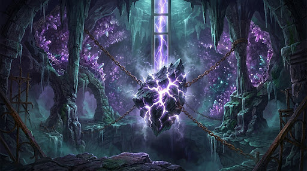

You emerge into a vast, cathedral-like geode cavern hollowed out of the bedrock directly beneath the island. The roar of the wind fades into a deep, resonant thrumming that vibrates in your ribs. Suspended in the center of the cavern by chains of meteoric iron hangs the lighthouse's true engine: a jagged lodestone the size of a carriage, pulsing in rhythm with the ocean tide. Cracks of blinding white light spiderweb across the stone's dark surface. With every wave that crashes against the cliffs outside, the fissure widens, threatening to tear the reef apart and drag the lighthouse into the abyss. Directly above the lodestone, a vertical shaft of polished mirror-glass rises all the way to the summit dome, waiting to channel the cavern's power upward. At the base of the stone, a narrow cleft shaped like a crescent moon pulses with hungry magnetic force.